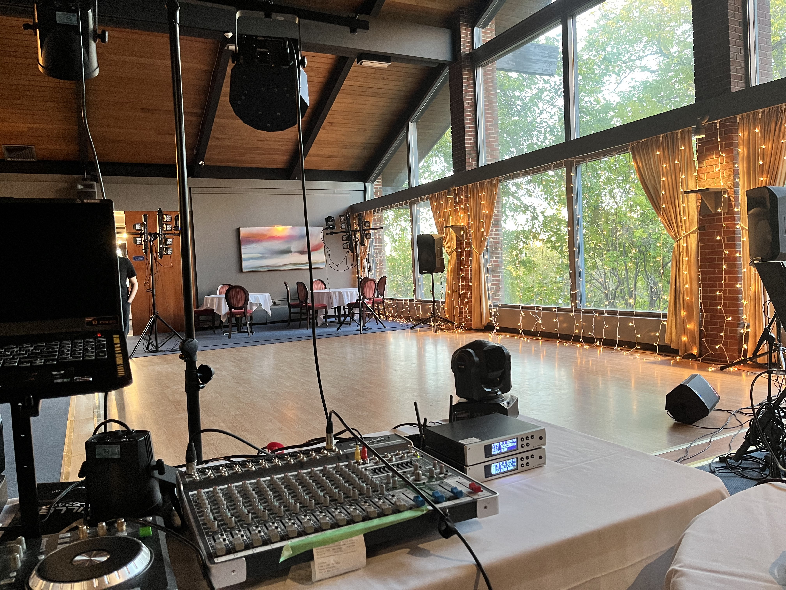

About Ethan
Get to know your future DJ

Ethan's DJ Service is an independently run business perfect for any event you may have. What started with a couple events a year has now sprad into multiple a month, and even being offered a job with the Edmonton Public School board.
With a deep history and knowledge in both, technology and music, Ethan is the perfect DJ for any event you could ever have. Ethan is a college student in Alberta at the moment, studying to be a Computer Network Administrator.

Ethan has been working in the field of audio and lighting for 6 years now, due to his time in technical theater. He has been the head technitian in the Harry Ainlay theater for multiple years now, and is an expert on the subject.